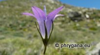

A. DC.")
 C. PRESL.")
| PHRYGANA | Fauna | Flora | Galles | liste des espèces |
contact-
info-commentaires: phrygana1 (at) gmail.com |
| Particularités crétoises | nouveautés | Mines | ressources naturelles |
| les Campanulaceae de Crète |
|
|  |
|
|
||
| Campanula spatulata subsp. filicaulis | Petromarula pinnata | Solenopsis minuta subsp. annua | ||
| 16 juin 2012 |
| © paul fontaine -- © Phrygana.eu 2007 -- 2013 |